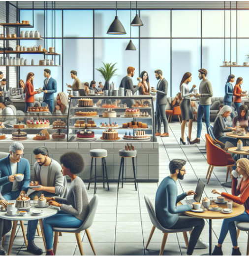

Uusi kahvila avasi ovensa Pasilan kampukselle
Uusi kahvila avasi ovensa Pasilan kampukselle
Pasilan kampuksella on avattu uusi kahvila nimeltään CampusCafe, joka tarjoaa opiskelijoille ja henkilökunnalle kahvia, lounastuotteita ja viihtyisän paikan opiskeluun. Uuden kahvilan tavoitteena on tehdä kampuksesta entistä yhteisöllisempi ja tarjota opiskelijoille paikka, jossa voi viettää aikaa myös luentojen ulkopuolella.
Kahvia ja välipalaa opiskelupäivän keskelle
CampusCafe sijaitsee kampuksen pääaulassa ja palvelee opiskelijoita arkisin aamusta iltapäivään. Valikoimassa on sekä tuttuja kahvilatuotteita että kevyitä lounasvaihtoehtoja.
Kahvilastamme voi ostaa mm.
- kahvia, teetä ja kaakaota
- makeita leivonnaisia
- sämpylöitä ja täytettyjä leipiä
- smoothieita
- salaatteja ja kevyitä lounasannoksia

Kahvilassa on myös langaton verkkoyhteys ja runsaasti pistorasioita. Näin opiskelijat voivat tehdä siellä itsenäisiä tehtäviä tai ryhmätöitä.
Opiskelijoiden toiveet näkyvät suunnittelussa
Kahvilan suunnittelussa on otettu huomioon opiskelijoilta saatu palaute. Opiskelijat toivoivat erityisesti kohtuuhintaisia tuotteita, rauhallisia työskentelypaikkoja ja viihtyisää tilaa yhdessäololle.
Kahvilan projektipäällikkö kertoo, että tavoitteena on tehdä paikasta kampuksen yhteinen kohtaamispaikka.
"Haluamme, että tänne voi tulla yhtä hyvin kahville kavereiden kanssa kuin tekemään ryhmätyötä ennen seuraavaa luentoa." kertoo projektipäällikkö.
Avajaisviikolla erikoistarjouksia
Uuden kahvilan avajaisia juhlistetaan ensimmäisen viikon ajan erilaisilla tarjouksilla. Perjantaina järjestetään varsinainen avajaispäivä, jolloin opiskelijat ja henkilökunta voivat tutustua kahvilaan ja antaa palautetta sen toiminnasta.